Crop Information Database
Comprehensive guides on cultivation, soil, and harvesting.

Wheat
Staple cereal grain essential for flour and baking.

Tomato
Versatile culinary vegetable rich in Lycopene.

Apple
Popular pome fruit grown in temperate zones.
Cotton
Fiber crop used primarily in the textile industry.
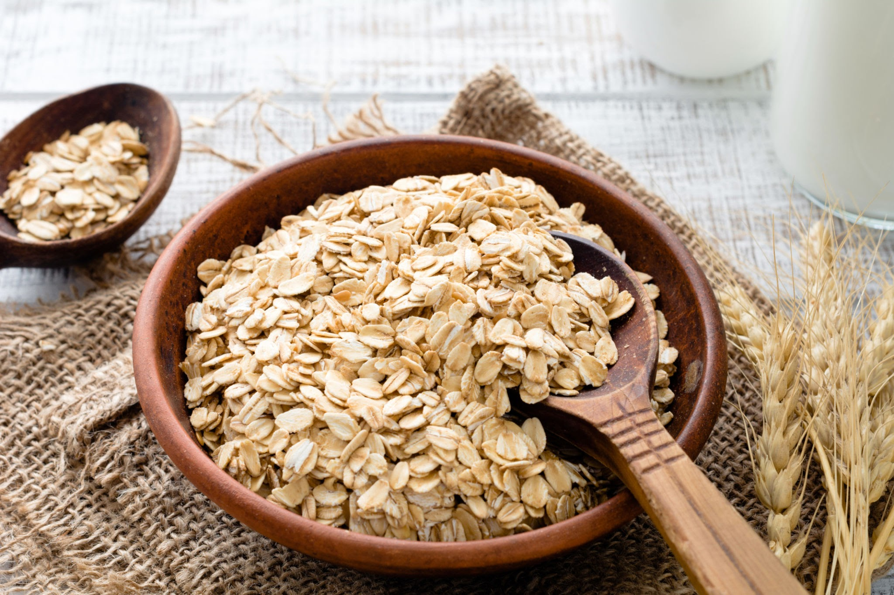
oat
The oat, sometimes called the common oat.
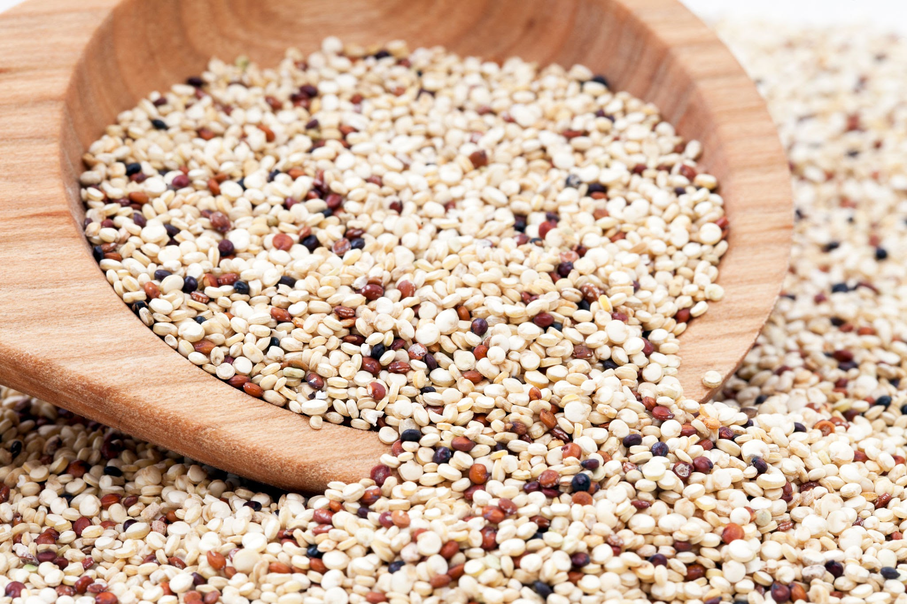
Quinoa
Quinoa is a flowering plant in the amaranth family.
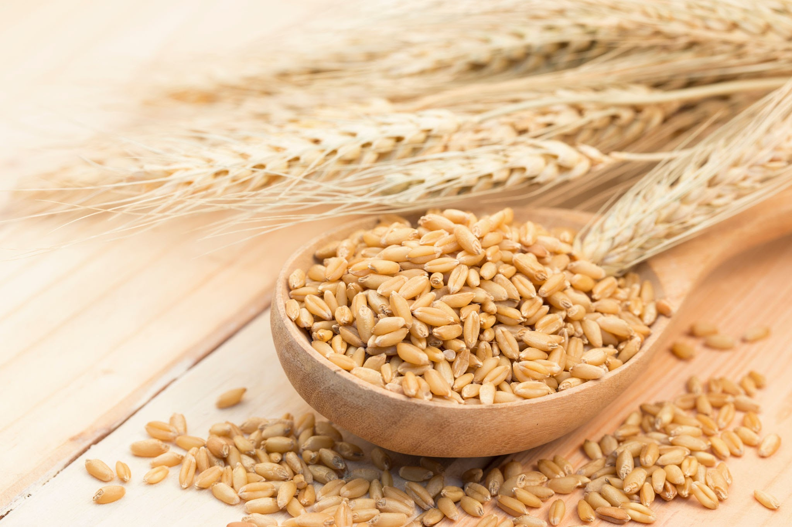
Barley
Barley, a member of the grass family, is a major cereal grain.
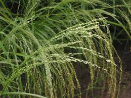
Teff
Teff, Eragrostis tef, also known as Williams lovegrass and annual.
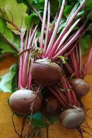
Beetroot
Beetroot or beet is the taproot portion of a Beta vulgaris subsp.
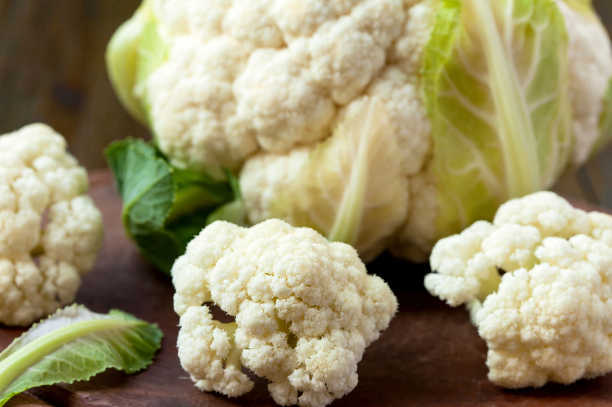
Cauliflower
Cauliflower is one of several vegetables cultivated from.
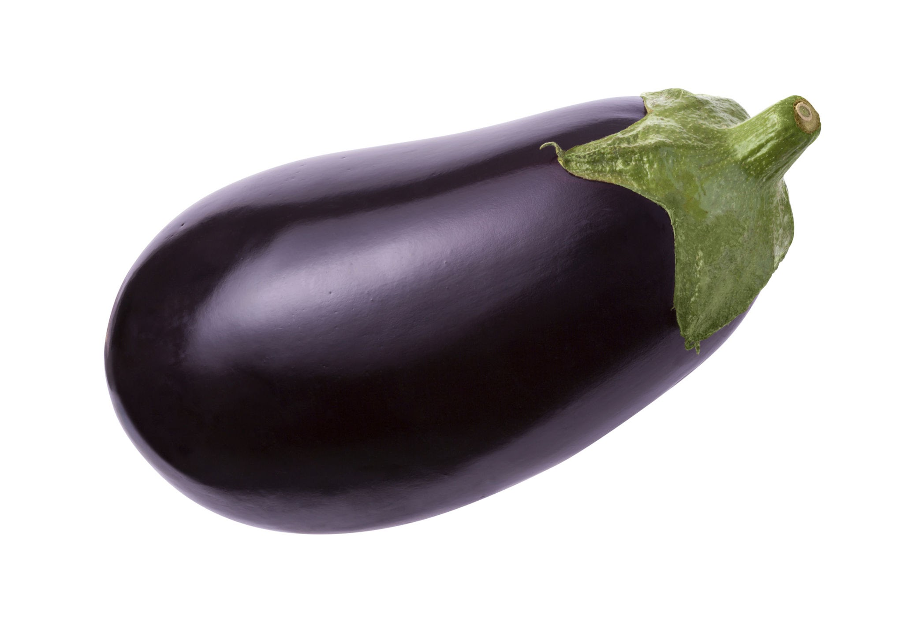
Eggplant
Eggplant, aubergine, brinjal, or baigan is a plant species.
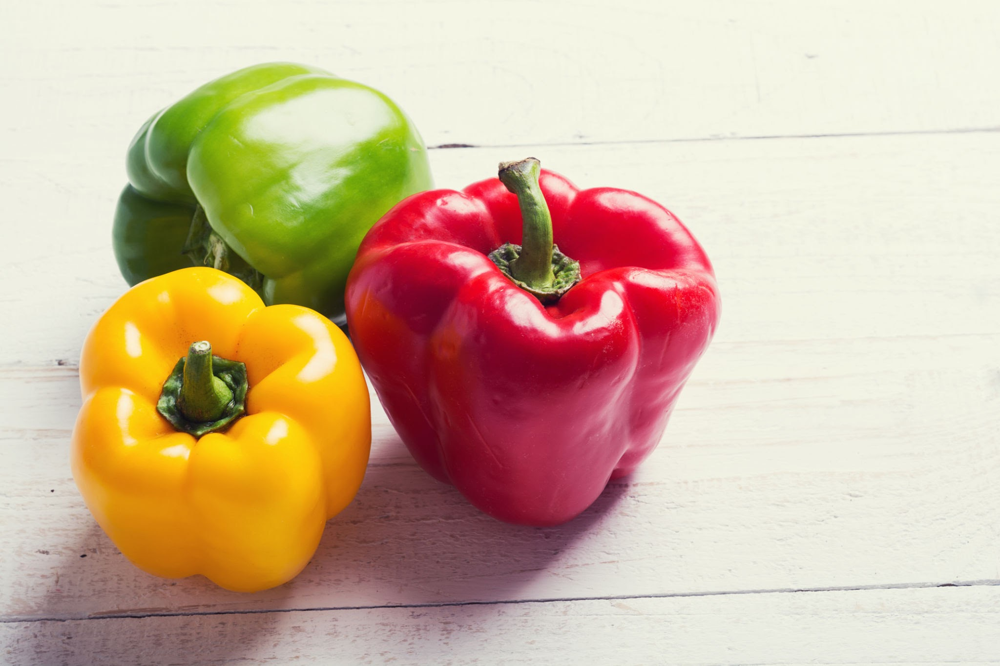
Bell pepper
The bell pepper is the Group of the species Capsicum annuum.
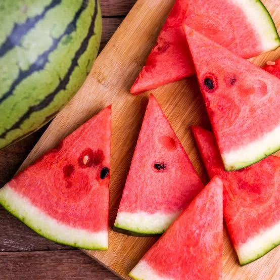
watermelon
The watermelon is a species of flowering plant in the family Cucurbitaceae.
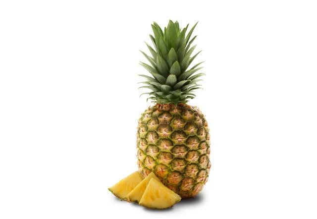
pineapple
The pineapple is a tropical plant with an edible fruit; it is the most economically.
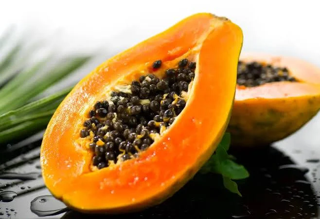
papaya
The papaya, papaw, or pawpawawpaw is the plant species Carica papaya.
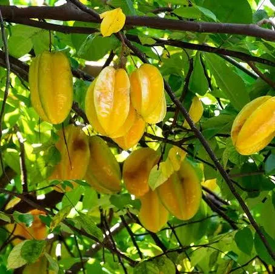
Averrhoa carambola
Averrhoa carambola is a species of tree in the family Oxalidaceae native to tropical Southeast Asia.
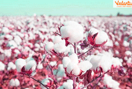
Cotton
Cotton is the most important fibre crop of India and plays an important role in industrial and agricultural.

Cocoa
Dry cocoa solids are the components of cocoa beans remaining after cocoa butter.
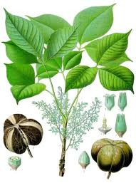
Rubber
Plantation Crops (Coffee, Coconut, Tea, and Rubber etc.) Horticulture crops (Fruits and Vegetables).
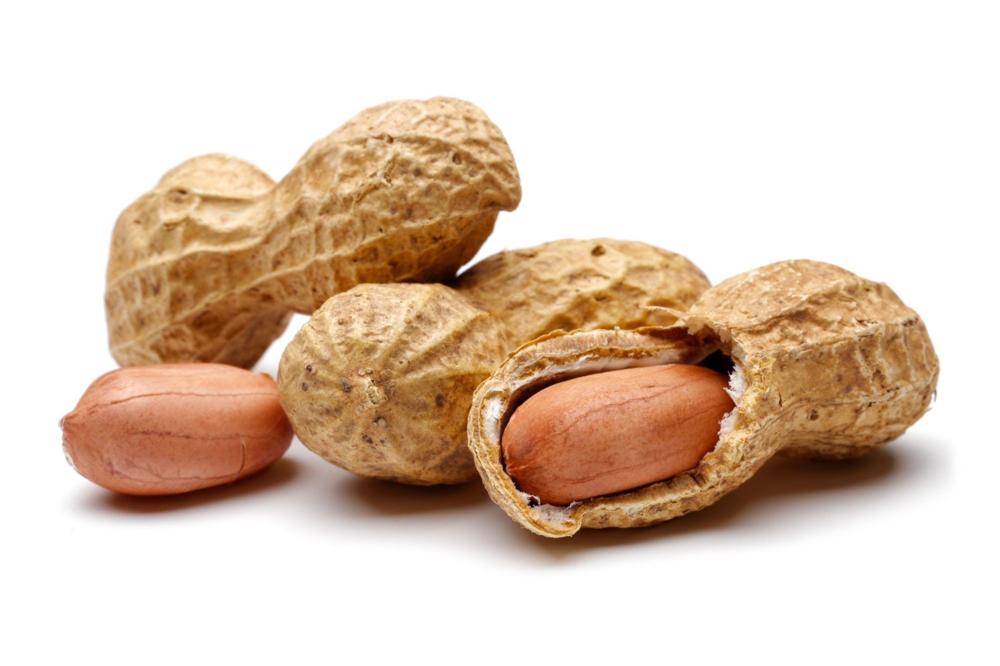
Groundnut
The peanut, also known as the groundnut, goober, goober pea, pindar or monkey.